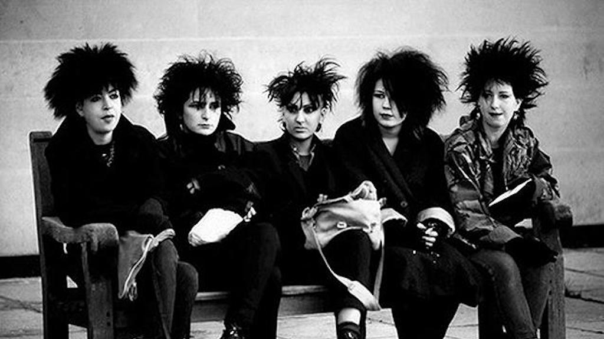
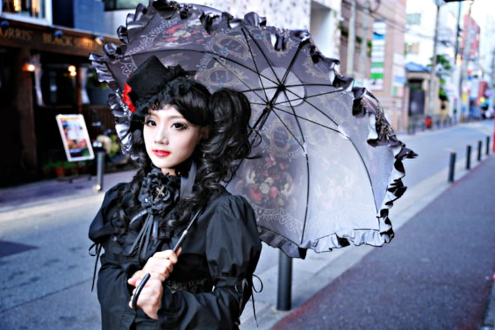

Il Goth è un insieme di sottoculture che inizialmente si sono sviluppate intorno alla fine degli anni settanta e l’inizio degli anni ottanta nel Regno Unito, ma che poi si sono propagate in altre parti del mondo creando più varietà; esse sono principalmente accomunate da musica, ideali, modo di vestire e apparire (moda, trucco, acconciatura ecc…). Il termine goth derviva da “Goti”, un popolo dell’ europa nordica e occidentale considerato barbarico, che è stato causa della caduta dell’impero romano, infatti fino al settecento il termine assume un significato negativo anche a causa della cristianizzazione in Europa, fin quando nel regno unito si inziò a sviluppare una nostalgia per l’arte gotica (in inglese “gothic”, che è la versione estesa del termine “goth”, termine affibbiato all’arte gotica durante il periodo illuminista), così questa gente nostalgica venne rinominata da Horace Walpole “Goth”: per la prima volta il termine inizia a non avere una connotazione negativa.
Ritornando ai giorni d’oggi, l’inclinazione al gotico tra la gente comune è relativa a:
La musica Goth, che nasce intorno agli anni ottanta, figlia del post-punk, non a caso il Goth è derivante dal movimento sociale punk;
Gusti e ideali, ovvero si tende a provare fascino e interesse per l’arte, il mondo spirituale e ogni cosa che possa essere considerato tetro sinistro e decadente, questo perchè la sottocultura goth si ispira all’estetica cupa del romanzo medievale, della musica gotica e dei film; si è attratti da tetrezza non perchè (come alcuni pensano) possa essere considerata cattiva e minacciosa, ma perchè viene associata alla morte, ed essa viene vista benevolmente come parte del ciclo della vita; inoltre si crede nell’amore eterno e a credere nella vita dopo la morte. Si tende a rifiutare il conservatorismo, infatti la cultura gotica è basata sulla tolleranza verso la diversità, quindi se sei goth non puoi essere razzista omofobo misogino o con qualsiasi altra forma di xenofobia.
Stile, si tende ad indossare capi di abbigliamento di colore nero; nella cultura goth il colore nero rappresenta fascino e mistero, che a volte possono essere scambiati per intimidatori e relativi a qualcosa di malvolente; cio può essere causato da vari stereotipi sviluppatosi in conseguenza di avvenimenti storico-culturali, ma in generale ci sono alcuni studi psicologici che sono prova che vestirsi di nero può far sembrare più autorevoli e sicuri di sé. I capi di abbigliamento in questione variano in base alla sottocultura, possono essere:
•più eleganti e raffinati, ornati con vari dettagli come vari pizzi nel colletto o nelle maniche di maglie e camicie, guanti in tessuto, ombrelli da sole, corsetti, fiocchi, mantelli, fantasie e ornamenti che possono vagamente ricordare i vestiari dell’epoca vittoriana, infatti il tema centrale di queste sottoculture è la storicità della moda, queste sottoculture si sono sviluppate intorno agli anni novanta nell’Europa nordica (romantic goth,vampire goth, victorian goth); • più anticonformisti e possibilmente provocatori, accessori con borchie, maniche a rete, chocker, reggicalze, stivali con platform molto alte, imbracature, maschere, locks per capelli (trad goth, cyber goth, fetish goth*); • più trendy e graziosi, trasmettono comunque mistero ma hanno delle caratteristiche che rendono l’aspetto del soggetto che li indossa più fanciullesco e sono orientati più verso la sfera femminile; accessori come cuffie da neonato, parasole, ombrellini, fiocchi, nastri, calze sopra il ginocchio, gonne stratificate e ornate in pizzo (goth lolita);  -Ci sono anche altri stili di questa cultura nati dopo o che comunque (che per ora) hanno una rilevanza storico culturale minore o che sono più legati a sottoculture sviluppatosi in periodi vicini a quello della cultura goth (hippy goth, J-goth, perky goth, mopey goth, corp goth, medieval goth, emo goth, greek goth, gothability, cabaret goth, streampunk goth, faerie goth, tribal goth).
Specificate le varietà presenti all’interno della cultura stessa ci sono comunque alcuni capi accessori e cosmetici che accomunano grosso modo tutte le sottoculture: accessori in argento, come anelli, collane, catene ecc…; in generale dei vestiari che rientrano nelle sfumature del nero, smalto nero, obretto e rossetto nero, tinte cosmetiche molto chiare usate come base make-up, croci e rosari, gioielli rappresentanti creature della notte e simboli della cultura goth (a cui è stato attribbuito un significato); ma perchè i gioielli proprio in argento? Perchè i goti si definivano i figli della notte, dunque adoravano tutto ciò correlato all’oscurità, e quest’ultimo essendo un metallo lunare, rispecchia l’estetica di questa sottocultura. Per quanto riguarda la capigliatura,la più comune acconciatura goth è quella con capelli molto voluminosi (volume acquisto grazie all’applicazione di lacca ed aver pettinato i capelli partendo dalle punte e andando verso le radici, anzichè il contrario) spesso (ma non per forza) accompagnati dalla frangetta sulla fronte.
C’è da specificare una cosa importantissima: